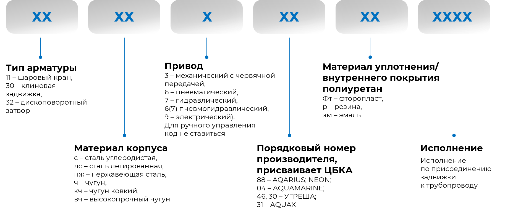

1. Задвижка клиновая стальная
Задвижки клиновые стальные один из наиболее распространенный вид трубопроводной арматуры в нефтегазоперерабатывающих производствах.
Изучите конструкцию задвижки клиновой стальной
1 – корпус;
2 – крышка;
3 – клин;
4 – шпиндель;
5 – гайка шпинделя;
6 – прокладка;
7 – фланец сальника;
8 – набивка сальника;
9 – маховик;
10 – ось.
3. Преимущества и недостатки задвижек
| Преимущества | |
|---|---|
| незначительное гидравлическое сопротивление при полностью открытом проходе | |
| отсутствие поворотов рабочей среды | |
| простота обслуживания | |
| относительно небольшая строительная длина | |
| возможность подачи среды в любом направлении | |
| Недостатки | |
|---|---|
| невозможность применения для сред с кристаллизирующимися включениями | |
| небольшой допускаемый перепад давлений на затворе (по сравнению с вентилями) | |
| невысокая скорость срабатывания затвора | |
| возможность получения гидравлического удара в конце хода | |
| большая высота | |
| трудности ремонта изношенных уплотнительных поверхностей затвора при эксплуатации | |
3. Преимущества и недостатки задвижек
Изучите расшифровку маркировки на примере задвижки 30ч6бр и 30ч39р
Задвижки в корпусе из серого чугуна с ручным управлением и уплотнительными поверхностями из бронзы и резины соответственно.
- 30 – задвижка
- ч – серый чугун
- 6 и 39 – номера моделей
- бр – уплотнительные кольца из бронзы
- р – резиновое уплотнение
Материал изготовления деталей задвижек
Конструктивные элементы задвижек практически идентичны. Но в зависимости от различных факторов существуют отличия.
Из литьевой стали изготавливаются корпуса и наружные части задвижек, т.к. эти сплавы отвечают требуемой прочности и плотности.
Ходовые гайки изготавливают из чугуна, многокомпонентной латуни или бронзы, содержащие медь и легирующие добавки, которые устойчивы к агрессивным средам.
Углеродистая или жаропрочная нержавеющая сталь марки 20Х13 используется для производства шпинделя.
Уплотнитель клина производят из сплава легированной 2Cr13 с низким содержанием углерода, Св-10Х17Т, Св-13Х25Т проволочного типа. Для кольца это также 2Cr13 или Св-08Х21Н10Г6, Св-07Х25Н13 (нержавейка).
Марганец и кремний, добавляемый в сплавы (легированной хромистой стали), из которых изготавливают уплотнитель клина и кольца, обеспечивает стабильность и прочность материала.
Та же корпуса задвижек могут изготавливаться из алюминиевых сплавов, которые ипользуются при низких температурах или химически агрессивных средах.
Материал изготовления деталей задвижек
Примеры используемых материалов для производства элементов задвижек приедены в таблице
| № | Название | Материал | № | Название | Материал |
|---|---|---|---|---|---|
| 1 | Корпус | Чугун | 8 | Прокладка | Оловянная бронза |
| 2 | Заслонка | Чугун, покрытый этилен-пропиленовым каучуком (EPDM) | 9 | Втулка | Оловянная бронза |
| 3 | Болт | Оцинкованное железо | 10 | Болт | Оцинкованное железо |
| 4 | Сальник | Бутадиен-нитрильный каучук (NBR) | 11 | Осевая крышка | Чугун |
| 5 | Крышка задвижки | Чугун | 12 | Пыльник | Бутадиен-нитрильныйкаучук (NBR) |
| 6 | Тяга задвижки | Нержавеющая сталь | 13 | Маховик | Чугун |
| 7 | Уплотнительное кольцо | Бутадиен-нитрильный каучук (NBR) | 14 | Уплотнительная гайка | Оцинкованное железо |